Music Video Pre-Production | April 11-12, 2026 | The Subway, Nashville
The album art color palette (deep blue/teal with red METER branding) sets the tone for all visual decisions.


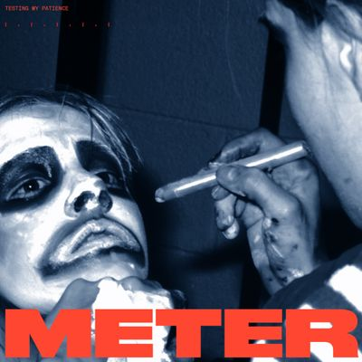
Venue has vintage subway car interiors — blue seats, natural window light, metal/industrial surfaces.
These album covers and photographs establish the visual language — late-90s/early-2000s electronic, indie, and alternative music aesthetics. Heavy emphasis on: subway/transit spaces, fluorescent and artificial lighting, blue-green-yellow-amber color casts, urban isolation, and clean-but-gritty Y2K design.

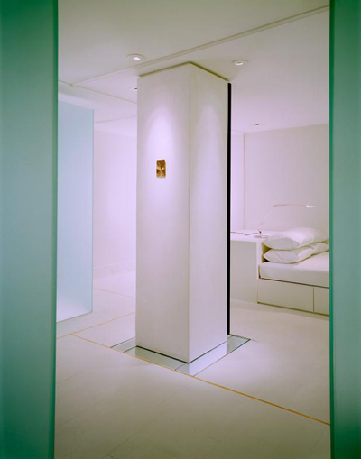

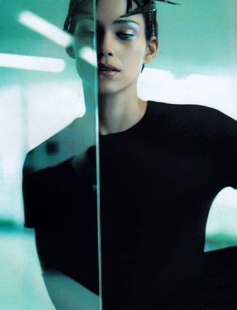
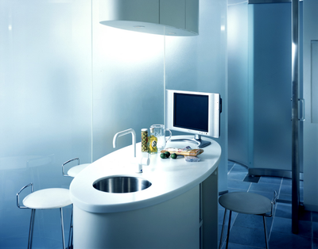
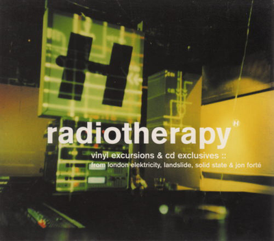

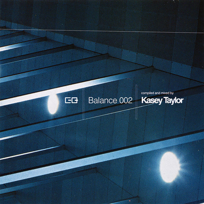
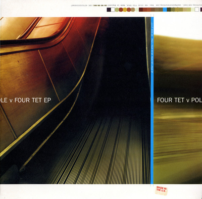


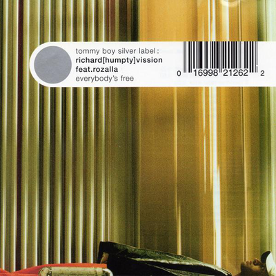
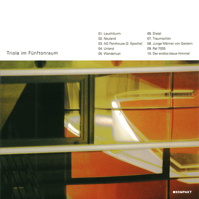
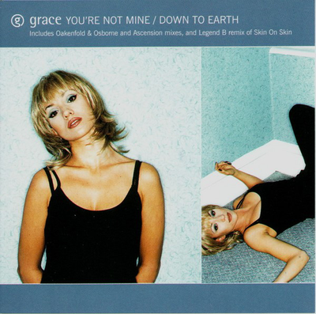

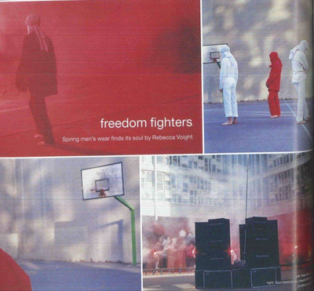

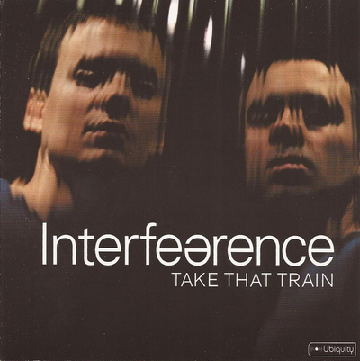


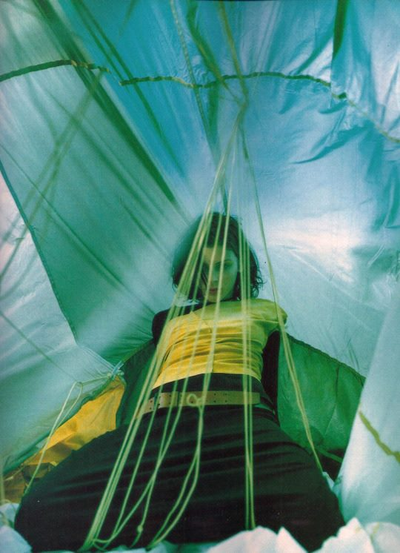


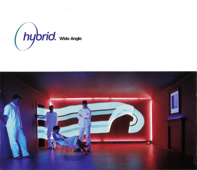

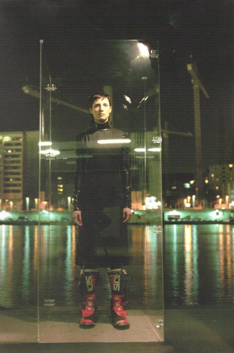
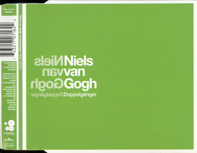

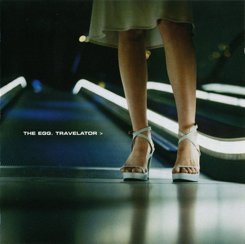

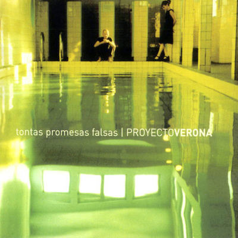
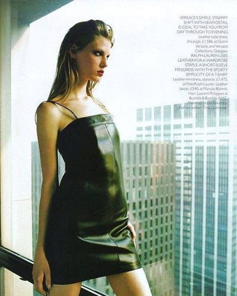
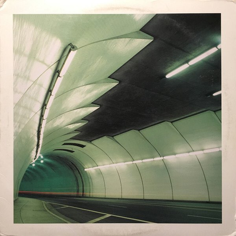
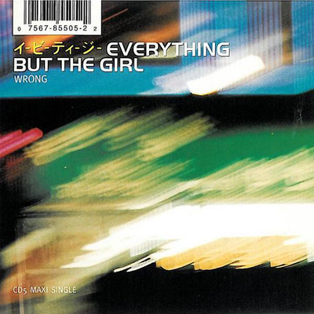
Matt pulled these specific camera moves from Linkin Park's 'Papercut' video as direct references for the shoot. The GIFs capture specific movements and framings to recreate/adapt — NOT copy 1:1.
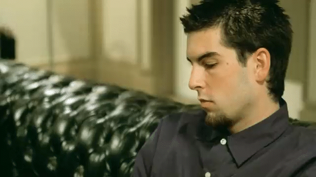
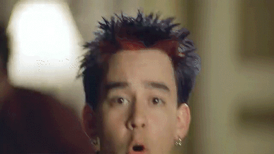
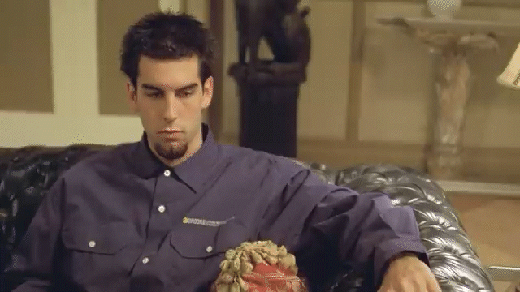
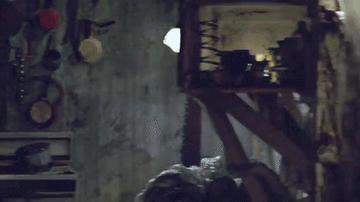

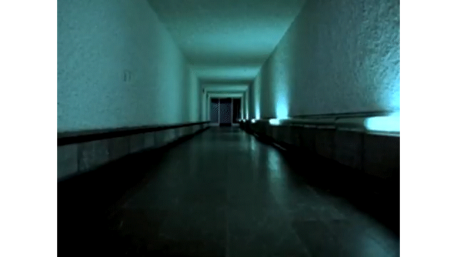
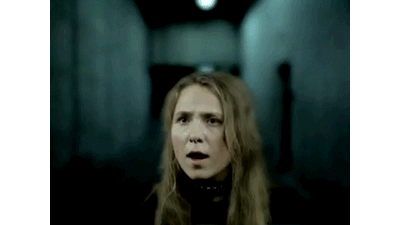
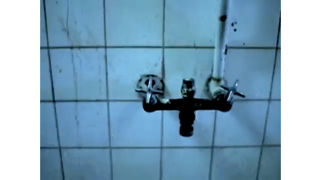
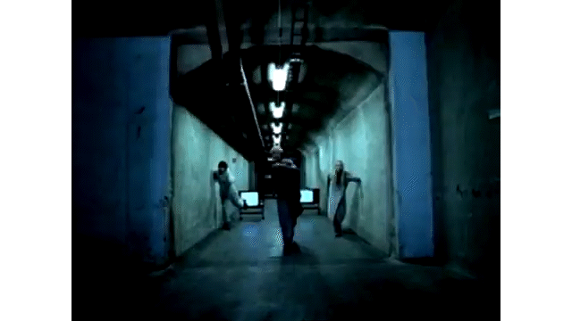